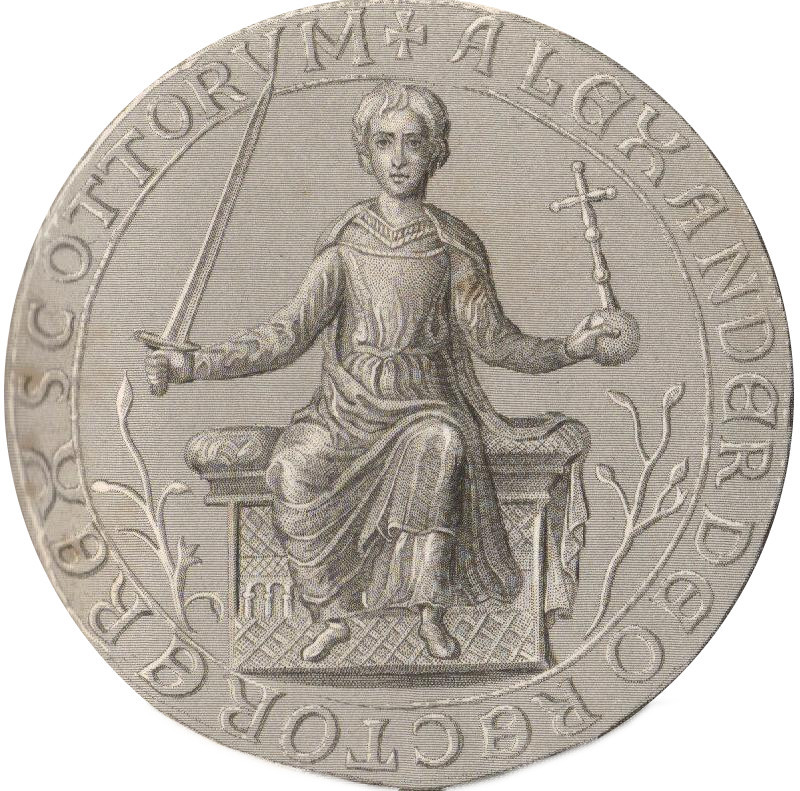
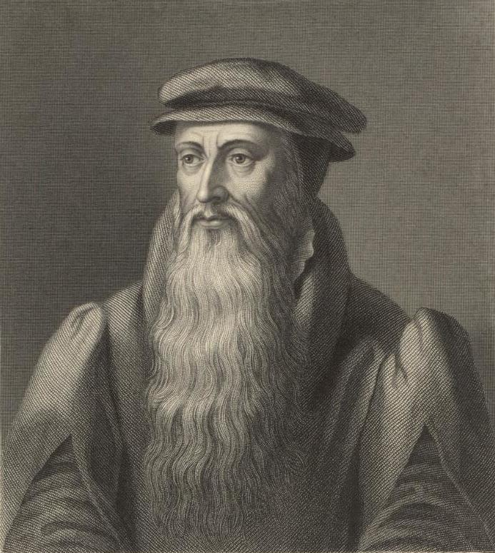
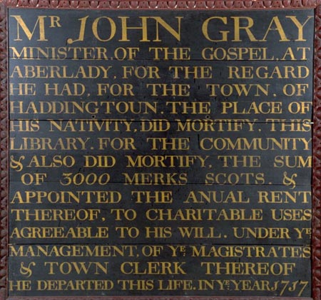

Come Learn About Haddington!
Haddington was first granted Burgh status during the first half of the twelfth century during the reign of King David I, and grew to be the fourth largest town in Scotland!
Some important historical figures were born in Haddington, such as:
- Alexander II - King of Scotland

- John Knox - Major figure in the Scottish Reformation and founder of the Church of Scotland

- John Gray - Founded a public library for the use of the poor apon his death in 1717 (One of the first in Scotland). The current library and museum is named after him.
